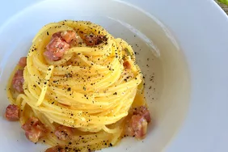

Carbonara Recipe
Home

Description
This carbonara recipe comes from an Italian, unlike a lot of recipes out there for spaghetti alla carbonara. It's very true to what you'd find in Italy — no cream, just eggs, and Pecorino Romano cheese is used, not Parmesan.
Ingredients
- 1 (14 ounce) package spaghetti
- 5 ounces guanciale (cured pork cheek), cut into small cubes
- 3 egg yolks
- 1 large egg
- ¾ cup grated Pecorino-Romano cheese, plus more to serve
- salt and freshly ground black pepper to taste
Steps
- Fill a large pot with lightly salted water and bring to a rolling boil. Stir in spaghetti and return to a boil. Cook pasta uncovered, stirring occasionally, until tender yet firm to the bite, about 12 minutes. Reserve a little pasta water, then drain.
- Meanwhile, heat a skillet over medium heat; add guanciale, cook and stir until crisp, 5 to 10 minutes.
- Whisk egg yolks and whole egg together in a bowl; whisk in ¾ cup Pecorino-Romano cheese, salt, and pepper until combined.
- Stir in guanciale. Add spaghetti; toss until evenly coated. Season to taste with extra cheese, salt, and pepper; serve.